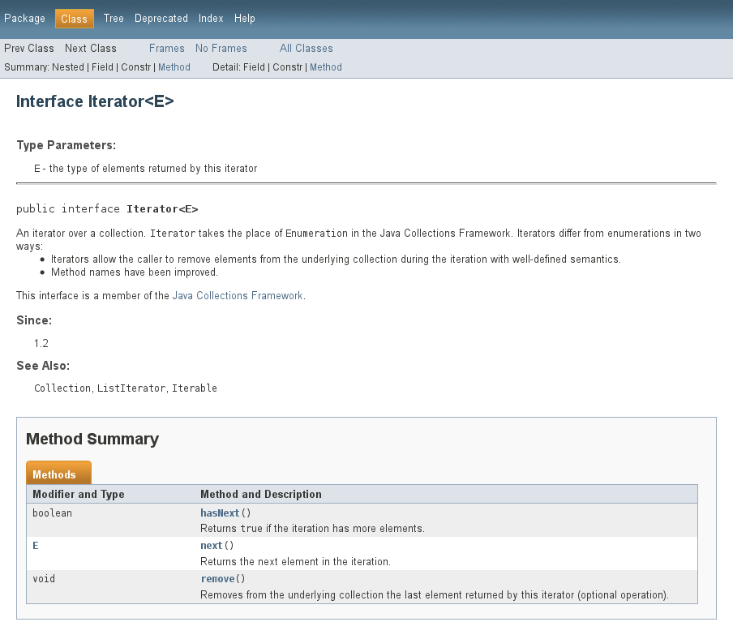
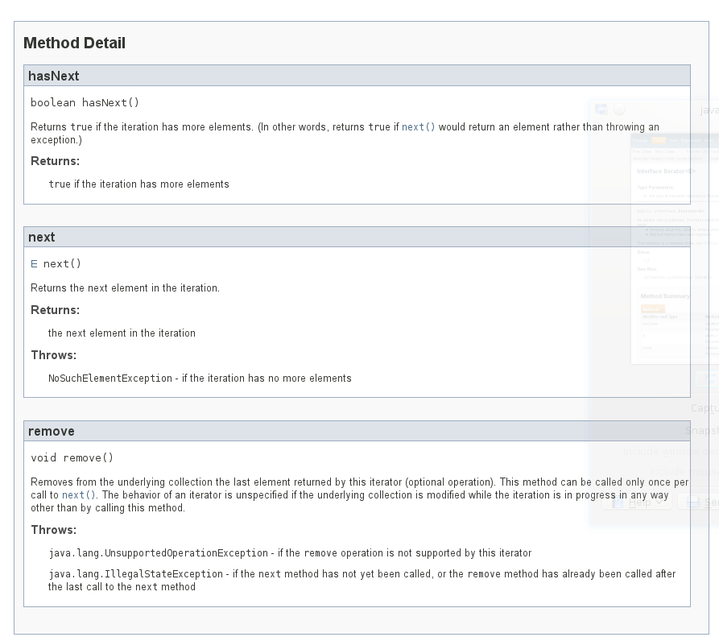
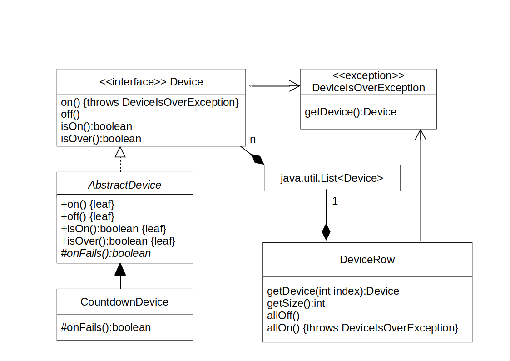
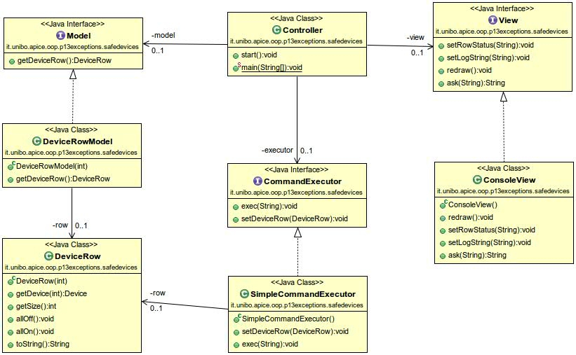

Eccezioni
Progettazione e Sviluppo del Software
C.D.L. Tecnologie dei Sistemi Informatici
Roberto Casadei — roby.casadei@unibo.it
Danilo Pianini — danilo.pianini@unibo.it
Nota
-
Questo materiale è ampiamente basato su quello realizzato dal Prof. Mirko Viroli, che ringrazio.
-
Ogni errore riscontratovi è esclusiva responsabilità degli autori di questo documento.
Outline
Goal della lezione
- Illustrare i vari meccanismi di gestione delle eccezioni in Java
- Dare linee guida per la progrettazione di sistemi che usano eccezioni
Argomenti
- Errori a run-time e necessità di una loro gestione
- Tipi di eccezioni/errori in Java
- Istruzione
throw - Costrutto
try-catch-finally - Dichiarazioni
throws - Esempi e Pattern MVC
Errori
Errori nei programmi
Errori a tempo di compilazione (compile-time)
- sono quelli più grossolani, sono intercettati dal compilatore
- quindi rientrano nella fase dell’implementazione, sono innocui
- un linguaggio con strong typing consente di identificarne molti a compile-time
Errori a tempo di esecuzione (run-time) ($\Leftarrow$ oggetto della lezione)
- sono condizioni anomale dovute alla dinamica del sistema
- parametri anomali a funzioni, errori nell’uso delle risorse di sistema, …
- in genere è possibile
- identificare/descrivere dove potrebbero accadere,
- intercettarli e
- gestirli prevedendo procedure di compensazione (rimedio al problema che le ha causate)
- alcuni linguaggi (come Java, non il C) forniscono costrutti per agevolarne la gestione
Errori per causa interna: lanciati dalla JVM
Errore numerico
int divide(int x, int y){ return x/y; }
...
int z = divide(5,0);
// ERRORE: divisione per 0
Overflow memoria
int f(int i){ return i==0 ? 0 : f(i+1); }
...
int n=f(1);
// ERRORE: out of (stack) memory
Riferimento null
int mysize(List<?> l){ return l.size(); }
...
int n=mysize(null);
// ERRORE: invocazione metodo size() su null
Violazioni di contratto d’uso di un oggetto: librerie Java
Operazione non supportata
Collections.<Integer>emptySet().add(1);
// UnsupportedOperationException
/* ERRORE: emptySet() torna un Set immutabile
deve essere impedita l'invocazione di add() */
Elemento non disponibile
Iterator<Integer> i = Arrays.asList(1,2).iterator();
i.next();
i.next();
i.next(); // NoSuchElementException
/* ERRORE: il contratto d'uso degli Iterator prevede di non
invocare next() se hasNext() dà false */
Formato illegale
Integer.parseInt("10.4");
// NumberFormatException
/* ERRORE: parseInt() si aspetta una stringa che contenga,
carattere per carattere, un intero valido */
Violazioni di contratto d’uso di un oggetto: nostro codice
Argomento errato
public class LampsRow{
private SimpleLamp[] row;
public LampsRow(int size){
if (size<0) {throw ???;} // lancio eccezione
this.row = new SimpleLamp[size];
}
..
Elemento non disponibile
public class RangeIterator implements Iterator<Integer>{
private int current;
private int stop;
public Integer next(){
if (current > stop) { throw ???} // lancio eccezione
return this.current++;
}
..
L’importanza della “error-aware programming”
Contratti
- Molti oggetti richiedono determinate “condizioni di lavoro” (sequenze di chiamata, argomenti passati, aspettative d’uso di risorse computazionali)
- Al di fuori queste condizioni è necessario interrompere il lavoro e effettuare azioni correttive
Il progettista della classe deve:
- identificare le condizioni di lavoro definite “normali”
- intercettare quando si esce da tali condizioni
- eventualmente segnalare l’avvenuto errore
Il cliente (a sua volta progettista di un altro oggetto) deve:
- essere informato di come l’oggetto va usato
- intercettare gli errori e porvi rimedio con un handler
Eccezioni in Java
Riassunto Java Exceptions
-
Gli errori a run-time in Java sono rappresentati da oggetti della classe
java.lang.Throwable. Vengono “lanciati”:- da esplicite istruzioni del tipo:
throw <exception-object>; - o, direttamente dalla JVM per cause legate al “sistema operativo”
- da esplicite istruzioni del tipo:
-
Tali oggetti portano informazioni utili a capire la causa dell’errore
-
Si può dichiarare se un metodo potrà lanciare una eccezione:
<meth-signature> throws <excep-class> { .. }
void m() throws SomeException { ... }
- Si può intercettare una eccezione e porvi rimedio:
try { <instructions> } catch(<excep-class> <var>) { ... }
try {
m();
} catch(SomeException){ ... }
Tutti meccanismi che impareremo a progettare e implementare in questa lezione!
Tipologie di errori in Java
Errori: java.lang.Error e sottoclassi
- Dovute a un problema “serio” (e non risolvibile) interno alla JVM
- Di norma una applicazione non si deve preoccupare di intercettarli (non ci sarebbe molto di più da fare che interrompere l’esecuzione)
Eccezioni unchecked: java.lang.RuntimeException e sottoclassi
- Causate da un bug nella programmazione
- Di norma una applicazione non si deve preoccupare di intercettarli (dovrebbero essere risolti tutti in fase di debugging del sistema)
Eccezioni checked: i java.lang.Throwable tranne le precedenti
- Causate da un problema prevedibile ma non rimediabile a priori
- Le applicazione devono dichiarli esplicitamente, e vanno intercettati e gestiti esplicitamente
Tipologie di errori in Java: UML

Usuale gestione
Errori
- Nessuna gestione necessaria (“se capitano, capitano…”)
Eccezioni unchecked
- Si potrebbero dichiarare con un commento al codice
- Di norma si riusano le classi
java.lang.RuntimeExceptiondel JDK, ossia non se ne definiscono di nuove tipologie - Si lanciano con l’istruzione
throw
Eccezioni checked
- Vanno dichiarate nel metodo con la clausola
throws - La documentazione deve spiegare in quali casi vengono lanciate
- Vanno intercettate con l’istruzione
try-catch - Di norma si costruiscono sotto-classi ad-hoc di
Exception(per modellare problemi “domain-specific”)
Errori ed eccezioni unchecked: cosa accade
Quando accadono, ossia quando vengono lanciate..
- Causano l’interruzione dell’applicazione
- Comportano la scrittura su console di errore (
System.err) di un messaggio che include lo StackTrace –Thread.dumpStack();- nota, solitamente
System.errcoincide conSystem.out
- nota, solitamente
- Dal quale possiamo desumere la sequenza di chiamate e il punto del codice in cui si ha avuto il problema
Errori/eccezioni unchecked comuni e già viste
StackOverFlowError: stack esaurito (ricorsione infinita?)NullPointerException,ArrayStoreException,ClassCastException,ArrayIndexOutOfBoundsException,NumericException,OperationNotSupportedException- Altri andranno verificati sulla documentazione quando incontrati
Esempio di stampa
public class UncheckedStackTrace {
public static void main(String[] args) {
final int[] a = new int[]{10,20,30};
final int b = accessArray(a,1); // OK
final int c = accessArray(a,3); // Eccezione
final int d = accessArray(a,5); // Eccezione
}
public static int accessArray(final int[] array, final int pos) {
return array[pos];
}
}
/* Stampa dell'errore:
Exception in thread "main" java.lang.ArrayIndexOutOfBoundsException: 3
at UncheckedStackTrace.accessArray(UncheckedStackTrace.java:9)
at UncheckedStackTrace.main(UncheckedStackTrace.java:5)
*/
L’istruzione throw
public class UncheckedThrow {
public static void main(String[] args) {
final int[] a = new int[]{ 10, 20, 30 };
final int b = accessArray(a,1); // OK
final int c = accessArray(a,3); // Eccezione
}
public static int accessArray(final int[] array, final int pos) {
if (pos < 0 || pos >= array.length) {
final String msg = "Accesso fuori dai limiti, in posizione "+pos;
throw new java.lang.IllegalArgumentException(msg);
}
return array[pos];
}
}
/* Stampa dell'errore:
Exception in thread "main" java.lang.IllegalArgumentException: Accesso fuori dai limiti, in posizione 3
at it.unibo.apice.oop.p13exceptions.classes.UncheckedThrow.accessArray(UncheckedThrow.java:13)
at it.unibo.apice.oop.p13exceptions.classes.UncheckedThrow.main(UncheckedThrow.java:7)
*/
L’istruzione throw: una variante equivalente
public class UncheckedThrow2 {
public static void main(String[] args) {
final int[] a = new int[] { 10, 20, 30 };
final int b = accessArray(a,1); // OK
final int c = accessArray(a,3); // Eccezione
}
public static int accessArray(final int[] array, final int pos) {
if (pos < 0 || pos >= array.length) {
final String msg = "Accesso fuori dai limiti, in posizione " + pos;
RuntimeException e = new java.lang.IllegalArgumentException(msg);
throw e;
}
return array[pos];
}
}
L’istruzione throw
Sintassi generale
throw <expression-that-evaluates-to-a-throwable>;
Casi tipici
throw new <exception-class>(<message-string>);
throw new <exception-class>(<ad-hoc-args>);
throw new <exception-class>();
Effetto
- Si interrompe immediatamente l’esecuzione del metodo in cui ci si trova (se non dentro una
try-catch, come vedremo dopo..) - L’oggetto eccezione creato viene “riportato” al chiamante
- Ricorsivamente, si giunge al
main, con la stampa suSystem.err(exception chaining)
Impl.corretta di RangeIterator
Riconsideriamo l’implementazione di RangeIterator
Elementi da considerare
- Controllare l’interfaccia
java.util.Iterator - Verificare la documentazione presente nel sorgente (ed in particolare, come si specificano le eccezioni lanciate)
- Il comando:
javadoc Iterator.java - La documentazione HTML prodotta
- Realizzazione e prova di
RangeIterator
Documentazione di Iterator: header
/*
* Copyright (c) 1997, 2010, Oracle and/or its affiliates. All rights reserved.
* .. informazioni generali della Oracle
*/
package java.util;
/**
* An iterator over a collection.
* .. descrizione generale della classe..
*
* <p>This interface is a member of the
* <a href="{@docRoot}/../technotes/guides/collections/index.html">
* Java Collections Framework</a>.
*
* @param <E> the type of elements returned by this iterator
*
* @author Josh Bloch
* @see Collection
* @see ListIterator
* @see Iterable
* @since 1.2
*/
public interface Iterator<E> { ...
Documentazione di Iterator: next() e hasNext()
public interface Iterator<E> {
/**
* Returns {@code true} if the iteration has more elements.
* (In other words, returns {@code true} if {@link #next} would
* return an element rather than throwing an exception.)
*
* @return {@code true} if the iteration has more elements
*/
boolean hasNext();
/**
* Returns the next element in the iteration.
*
* @return the next element in the iteration
* @throws NoSuchElementException if the iteration has no more elements
*/
E next();
...
Documentazione di Iterator: remove()
..
/**
* Removes from the underlying collection the last element returned
* by this iterator (optional operation). This method can be called
* only once per call to {@link #next}. The behavior of an iterator
* is unspecified if the underlying collection is modified while the
* iteration is in progress in any way other than by calling this
* method.
*
* @throws UnsupportedOperationException if the {@code remove}
* operation is not supported by this iterator
*
* @throws IllegalStateException if the {@code next} method has not
* yet been called, or the {@code remove} method has already
* been called after the last call to the {@code next}
* method
*/
void remove();
}
Documentazione generata: pt1

Documentazione generata: pt2

Realizzazione di RangeIterator
public class RangeIterator implements java.util.Iterator<Integer> {
private static final String MSG = "start can't be bigger than stop";
private int current;
final private int stop;
public RangeIterator(final int start, final int stop) {
if (start > stop) { // parametri errati
throw new java.lang.IllegalArgumentException(MSG);
}
this.current = start;
this.stop = stop;
}
public Integer next() {
if (!this.hasNext()) {
throw new java.util.NoSuchElementException();
}
return this.current++;
}
public boolean hasNext() {
return this.current <= this.stop;
}
public void remove() { // non supportiamo remove
throw new UnsupportedOperationException();
}
}
Catturare eccezioni
Il costrutto try-catch
Sintassi (da estendere successivamente)
try {
<body-maybe-throwing-an-exception>}
} catch(<throwable-class> <var>) {
<handler-body>
}
Esempio
try {
RangeIterator r = new RangeIterator(a,b);
} catch(RuntimeException e) {
System.out.println(e);
}
Significato
- Se il body nella
trylancia una eccezione del tipo specificato nellacatch - Allora si esegue il corrispondente handler, e non si ha la terminazione della applicazione
- Se non c’è eccezione si salta l’handler e si prosegue
Uso della RangeIterator senza try-catch
public class UseRange{
public static void main(String[] args) {
// args tiene inizio e fine, passate da line di comando
final int a = Integer.parseInt(args[0]); // "5"
final int b = Integer.parseInt(args[1]); // "10"
final RangeIterator r = new RangeIterator(a,b);
// remove(); // cosa succede con remove?
try {
System.out.print(r.next()+" ");
System.out.print(r.next()+" ");
System.out.println(r.next());
} catch (final java.util.NoSuchElementException e){
System.out.println("eccezione.. ma il programma continua "+e.toString());
}
System.out.println("fine programma");
}
}
/* Esecuzione: java UseRange 5 10
args vale: new String[]{"5","10"}
risultato: 5 6 7 */
/* Esecuzione: java UseRange 5 10.1
risultato: NumberFormatException */
/* Esecuzione: java UseRange 5 3
risultato: IllegalArgumentException */
/* Esecuzione: java UseRange 3 4
risultato: NoSuchElementException */
Uso della RangeIterator con try-catch
public class UseRange2 {
public static void main(String[] s) {
RangeIterator r = null; // va creata fuori dal try..
try {
final int a = Integer.parseInt(s[0]);
final int b = Integer.parseInt(s[1]);
r = new RangeIterator(a, b);
} catch (Exception e) { // catturo una qualsiasi Exception
System.out.println("Argomenti errati!");
System.out.println(e);
System.exit(1); // abnormal termination
}
try {
System.out.print(r.next() + " ");
System.out.print(r.next() + " ");
System.out.println(r.next());
} catch (java.util.NoSuchElementException e) {
System.out.println("Iterazione non corretta..");
System.out.println(e);
System.exit(1); // abnormal termination
}
System.exit(0); // ok termination
}
}
Il costrutto try-catch-finally
Sintassi generale
try {
<body-maybe-throwing-an-exception>}
} catch(<throwable-class> <var>) {
<handler-body>
} catch(<throwable-class> <var>) {
<handler-body>
} catch(<throwable-class> <var>) {
<handler-body>
} finally {
<completion-body>
}
Significato
- Se il body nella
trylancia una eccezione - La prima
catchpertinente esegue l’handler (non ci possono essere sovrapposizioni!) - Poi si eseguirà anche il
completion-body - Il body nella
finallysarà comunque eseguito!
catch multipli e finally
public class UseRange3 {
public static void main(String[] s) {
RangeIterator r = null; // creabile anche dentro al try..
try { // attenzione alla formattazione di questo esempio!
int a = Integer.parseInt(s[0]);
int b = Integer.parseInt(s[1]);
r = new RangeIterator(a, b);
System.out.print(r.next() + " ");
System.out.print(r.next() + " ");
System.out.println(r.next());
} catch (ArrayIndexOutOfBoundsException e) {
System.out.println("Servono almeno due argomenti!");
} catch (NumberFormatException e) {
System.out.println("Servono argomenti interi!");
} catch (IllegalArgumentException e) {
System.out.println(e);
} catch (Exception e) { // ogni altra eccezione
throw e; // rilancio l'eccezione
} finally {
// questo codice comunque eseguito
System.out.println("bye bye..");
}
}
}
Spiegazione
Come funziona la finally?
- garantisce che il codice nel suo handler sarà sicuramente eseguito
- … sia se ho avuto eccezione
- … sia se non ho avuto eccezione
- … sia se uno degli handler delle catch ha generato eccezione
A cosa serve?
- in genere contiene del codice di cleanup che deve comunque essere eseguito
- rilascio risorse, chiusura file, stampa messaggi, etc..
Vedremo la prossima settimana il costrutto chiamato try-with-resources
- consente di non esprimere il
finally
Creazione e rilancio di eccezioni
Creazione di una nuova classe di eccezioni
Nuove eccezioni
-
Un sistema potrebbe richiedere nuovi tipi di eccezioni, che rappresentano eventi specifici collegati al dominio applicativo
- Persona già presente (in un archivio cittadini)
- Lampadina esaurita (in una applicazione domotica)
-
Semplicemente si fa una estensione di
ExceptionoRuntimeException- a seconda che la si voglia checked o unchecked
- per il momento stiamo considerando solo le unchecked
-
Non vi sono particolari metodi da ridefinire di solito
- Solo ricordarsi di chiamare correttamente il costruttore del padre
- Se si vuole incorporare una descrizione articolata della causa dell’eccezione, la si può inserire nei campi dell’oggetto tramite il costruttore o metodi setter..
Esempio: MyException
public class MyException extends RuntimeException {
// tengo traccia degli argomenti che hanno causato il problema
private final String[] args;
public MyException(final String s, final String[] args) {
super(s);
this.args = args;
}
// modifico la toString per evidenziare this.args
public String toString() {
String str = "Stato argomenti: ";
str = str + java.util.Arrays.toString(args);
str = str + "\n" + super.toString();
return str;
}
}
Esempio: UseMyException
public class UseMyException {
public static void main(String[] s) {
try { // attenzione alla formattazione di questo esempio!
final int a = Integer.parseInt(s[0]);
final int b = Integer.parseInt(s[1]);
final RangeIterator r = new RangeIterator(a, b);
System.out.print(r.next()+" ");
System.out.print(r.next()+" ");
System.out.println(r.next());
} catch (Exception e) {
final String str = "Rilancio di: " + e;
RuntimeException e2 = new MyException(str, s);
throw e2;
}
}
}
/* Esempio: java UseMyException 10 13.1
Exception in thread "main" Stato argomenti: [10, 13.1]
it.unibo.exceptions.classes.MyException:
Rilancio di: java.lang.NumberFormatException: For input string: "13.1"
at it.unibo.exceptions.classes.UseMyException.main(UseMyException.java:14)
*/
Dichiarazione eccezioni checked
Checked vs Unchecked
Unchecked: RuntimeException o sottoclassi
- Quelle viste finora, dovute ad un bug di programmazione
- Quindi sono da catturare opzionalmente, perché rimediabili
- $\Rightarrow$ ..le linee guida più moderne le sconsigliano
Checked: Exception o sottoclassi ma non di RuntimeException
-
Rappresentano errori non riconducibili ad una scorretta programmazione, ma ad eventi abbastanza comuni anche nel sistema una volta installato e funzionante
- Funzionamento non normale, ma non tale da interrompere l’applicazione (p.e., l’utente fornisce un input errato inavvertitamente)
- Un problema con l’interazione col S.O. (p.e., file inesistente)
-
I metodi che le lanciano lo devono dichiararle esplicitamente (
throws) -
Chi chiama tali metodi deve obbligatoriamente gestirle
- o catturandole con un
try-catch - o rilanciandole al chiamante con la
throws
- o catturandole con un
Una eccezione checked: IOException e input da tastiera
import java.io.*;
public class IOFromKeyboard {
// La dichiarazione throws qui è obbligatoria!
public static int getIntFromKbd() throws IOException {
InputStreamReader ISR = new InputStreamReader(System.in);
BufferedReader keyboardInput = new BufferedReader(ISR);
String line = null;
line = keyboardInput.readLine(); // IOException
return Integer.parseInt(line);
}
public static void main(String[] args) throws Exception {
System.out.print("Inserisci un numero: ");
int a = getIntFromKbd();
System.out.println("Hai inserito il num.: " + a);
}
}
Qualche variante: campi statici
import java.io.*;
public class IOFromKeyboard2 {
private static final BufferedReader KBD =
new BufferedReader(new InputStreamReader(System.in));
private static int getIntFromKbd() throws IOException {
return Integer.parseInt(KBD.readLine());
}
public static void main(String[] args) {
try {
System.out.print("Inserisci un numero: ");
final int a = getIntFromKbd();
System.out.println("Hai inserito il num.: " + a);
} catch (IOException e) {
System.out.println("Errore di I/O: " + e);
} catch (NumberFormatException e) {
System.out.println(e);
}
}
}
Qualche variante: input iterato e rilancio
import java.io.*;
public class IOFromKeyboard3 {
private static final BufferedReader KBD = new BufferedReader(
new InputStreamReader(System.in));
private static int getIntFromKbd() throws IOException {
return Integer.parseInt(KBD.readLine());
}
public static void main(String[] args) throws NumberFormatException {
while (true) {
try {
System.out.print("Inserisci un numero: ");
final int a = getIntFromKbd();
System.out.println("Hai inserito il num.: " + a);
} catch (IOException e) {
System.out.println("Errore di I/O: " + e);
}
}
}
}
Input da tastiera: da Java 6 (non funziona in Eclipse!)
public class IOFromKeyboard4 {
// L'uso di System.console().readLine() non lancia eccezioni
public static void main(String[] args) {
while (true) {
System.out.print("Inserisci un numero: ");
final int a = Integer.parseInt(System.console().readLine());
System.out.println("Hai inserito il num.: " + a);
}
}
}
/*
* Si controlli la classe java.lang.Console, fornisce varie funzioni utili per
* l'I/O, come le stampe formattate tipo printf
*/
Esempio: applicazione domotica con eccezioni
Requirements
- Una fila di $n$
Devicecon tempo di vita limitato - Il sistema dovrà supportare in futuro diverse politiche di fine-vita dei device
- Il fine-vita viene rilevato al tentativo di accensione, ed è segnalato da una eccezione checked
- Esistono comandi per accendere e spegnere tutti i device
- Il sistema dovrà essere a prova di qualunque eccezione
UML: Modellazione Device

Interfaccia Device
public interface Device {
/**
* Switches Off the Device. It does nothing if it is already switched off.
*/
void off();
/**
* Switches On the Device. It does nothing if it is already switched on.
* If already over or becoming over it goes over and off.
*
* @throws DeviceIsOverException
* if it ends up off
*/
void on() throws DeviceIsOverException;
/**
* @return whether it is on
*/
boolean isOn();
/**
* @return whether it is over
*/
boolean isOver();
}
Eccezione DeviceIsOverException
public class DeviceIsOverException extends Exception {
private final Device device;
/**
* Reported for clarity, not really needed
*/
public DeviceIsOverException(final Device device) {
this.device = device;
}
public Device getDevice() {
return this.device;
}
}
AbstractDevice, pt1
public abstract class AbstractDevice implements Device {
private boolean on;
private boolean over; // over implies not on
/**
* Setting the lamp as working and off
*/
public AbstractDevice() {
this.on = false;
this.over = false;
}
final public boolean isOn() {
return this.on; // getter
}
final public boolean isOver() { // getter
return this.over;
}
final public void off() {
this.on = false; // setter
}
AbstractDevice, pt2
/*
* It makes sure we call onFails() properly, and over and off are
* consistently changed.
*
* @see safedevices.Device#on()
*/
final public void on() throws DeviceIsOverException {
if (!this.on) { // is this a real switch-on?
this.over = this.onFails(); // is it over?
this.on = !this.over; // correspondingly switch
}
if (!this.on) { // could I switch?
throw new DeviceIsOverException(this); // raise exception
}
}
/**
* Implement the strategy to recognise whether it is over
*
* @return whether should become over
*/
protected abstract boolean onFails();
public String toString() {
return this.over ? "over" : this.on ? "on " : "off";
}
}
CountdownDevice
public class CountdownDevice extends AbstractDevice {
private int countdown;
public CountdownDevice(final int countdown) {
super();
if (countdown < 1) {
throw new IllegalArgumentException();
}
this.countdown = countdown;
}
protected boolean onFails() {
if (this.countdown == 0) {
return true;
}
this.countdown--;
return false;
}
public String toString() {
return super.toString() + "." + this.countdown;
}
}
DeviceRow: Campi e costruttore
public class DeviceRow {
/**
* Default countdown for devices
*/
private static final int COUNTDOWN = 3;
/**
* The row of devices as a java.util.List, deferring actual implementation
*/
private final List<Device> list;
/**
* This constructor creates and initializes a list of CountdownDevice
*
* @param size is the number of devices to use
* @throws an IllegalArgumentException if size < 0
*
*/
public DeviceRow(int size) {
if (size < 0) {
throw new IllegalArgumentException();
}
this.list = new ArrayList<>();
for (int i=0; i<size; i++) {
this.list.add(new CountdownDevice(COUNTDOWN));
}
}
DeviceRow: Selettori e allOff()
/**
* @param index is the position of the device to get
* @return the device
*/
public Device getDevice(final int index) {
return this.list.get(index);
}
/**
* @return the number of devices
*/
public int getSize() {
return this.list.size();
}
/**
* Switches all devices off
*/
public void allOff() {
for (final Device d : this.list) {
d.off();
}
}
DeviceRow: allOn() e toString()
/**
* Switches all devices on, no matter whether one fails.
*
* @throws the last DeviceIsOverException raised, if any
*/
public void allOn() throws DeviceIsOverException {
DeviceIsOverException e = null;
for (final Device d : this.list) {
try {
d.on();
} catch (DeviceIsOverException de) {
e = de;
}
}
if (e != null) {
throw e;
}
}
public String toString() {
return "DeviceRow " + list;
}
}
UseDevice
public class UseDevice {
public static void main(String[] args) {
final DeviceRow dr = new DeviceRow(3);
System.out.println(dr);
// DeviceRow [off.3, off.3, off.3, off.3]
try {
dr.allOn();
dr.allOff();
dr.allOn();
dr.allOff();
dr.getDevice(0).on();
dr.getDevice(0).off();
dr.getDevice(1).on();
dr.getDevice(1).off();
System.out.println(dr);
// DeviceRow [off.0, off.0, off.1, off.1]
dr.allOn(); // Eccezione
} catch (DeviceIsOverException e) {
System.out.println("Eccezione...");
}
System.out.println(dr);
// DeviceRow [over.0, over.0, on .0, on .0]
}
}
Una applicazione completa
Elementi aggiuntivi
- Vi dovrà essere una interazione con l’utente
- Potrà da console fornire i comandi:
+N,-N,+all,-all,exit - ..e vedere direttamente l’effetto che hanno sul
DeviceRow - (è un prodromo di applicazione con GUI..)
Un problema architetturale
- come allestire una applicazione con interazione con l’utente?
Il pattern architetturale MVC (Model - View - Controller)
MVC – divide l’applicazione in 3 parti
Model: modello OO del dominio applicativo del sistemaView: gestisce le interazioni con l’utente (in futuro una GUI)Controller: gestisce il coordinamento fra Model e View
Applicazione (domotica)
-
Model- Un wrapper per un
DeviceRow
- Un wrapper per un
-
View- Implementata da un
ConsoleViewche lavora con la Console
- Implementata da un
-
Controller- Utilizza un
CommandExecutorche “processa” i comandi da tastiera
- Utilizza un
-
$\Rightarrow$
VieweModelnascoste da interfacce, per supportare un buon disaccoppiamento
UML: Design generale

Controller, pt1
/**
* The Logics class as of MVC
*/
public class Controller {
private static final String START = "Sistema inizializzato";
private static final String EXIT = "Comando di uscita... bye bye";
private static final String CMD_ERROR = "Comando errato.. reinserire";
private static final String DEVICE_OVER = "Device esaurito!";
private static final String CMD_OK = "Comando eseguito";
private static final String ASK = "Inserisci il comando (exit, +N, -N, +all, -all): ";
private final Model model;
private final View view;
private final CommandExecutor executor;
private Controller(int size) {
this.model = new DeviceRowModel(size);
this.view = new ConsoleView();
this.executor = new SimpleCommandExecutor();
this.executor.setDeviceRow(this.model.getDeviceRow());
}
Controller, pt2
/**
* This method implements the main loop of the program
*/
public void start() {
this.view.setLogString(START);
while (true) {
try {
this.view.setRowStatus(this.model.getDeviceRow().toString());
this.view.redraw();
final String command = this.view.ask(ASK);
this.executor.exec(command);
this.view.setLogString(CMD_OK);
} catch (final DeviceIsOverException e) {
this.view.setLogString(DEVICE_OVER);
} catch (final CommandNotRecognisedException e) {
this.view.setLogString(CMD_ERROR + " (" + e.getMessage() + ")");
} catch (final ExitCommandException e){
this.view.setLogString(EXIT);
System.exit(0);
}
}
}
public static void main(String[] args) {
new Controller(5).start();
}
}
Eccezioni
public class ExitCommandException extends Exception {
}
public class CommandNotRecognisedException extends Exception {
public CommandNotRecognisedException(String s) {
super(s);
}
}
Interfaccia e implementazione Model
/**
* The interface over the Model as of MVC
*/
public interface Model {
/**
* @return a device row
*/
DeviceRow getDeviceRow();
}
/**
* A simple wrapper implementing the model
*/
public class DeviceRowModel implements Model {
private final DeviceRow row;
public DeviceRowModel(final int size){
this.row = new DeviceRow(size);
}
public DeviceRow getDeviceRow(){
return this.row;
}
}
Interfaccia View
/**
* The interface over the View as of MVC
*/
public interface View {
/**
* @param s is the String representing the model status
*/
void setRowStatus(String s);
/**
* @param s is the String representing a message from the controller
*/
void setLogString(String s);
/**
* Updates the view
*/
void redraw();
/**
* @param question is a message sent to the user
* @return the provided reply
*/
String ask(String question);
}
ConsoleView, pt1
import java.io.*;
/**
* This class provides an implementation of the View simply using the console
*/
public class ConsoleView implements View {
private static final String CLEAR_CONSOLE = "\033[2J\033[;H";
private static final BufferedReader KBD =
new BufferedReader(new InputStreamReader(System.in));
private String rowString;
private String logString;
public ConsoleView() {
this.rowString = "";
this.logString = "";
}
public void redraw() {
System.out.print(CLEAR_CONSOLE);
System.out.println(this.rowString);
System.out.println(this.logString);
}
ConsoleView, pt2
public void setRowStatus(final String s) {
this.rowString = s;
}
public void setLogString(final String s) {
this.logString = s;
}
public String ask(final String question){
System.out.print(question); // Asking message
try{
return KBD.readLine();
} catch (IOException e){
return null;
}
}
}
Interfaccia CommandExecutor
/**
* A helper class for the controller, executin a command over the device row
*/
public interface CommandExecutor {
/**
* @param s is the String inserted by the user
* @throws ExitCommandException
* @throws CommandNotRecognisedException
* @throws DeviceIsOverException
*/
void exec(String s) throws ExitCommandException,
CommandNotRecognisedException,
DeviceIsOverException;
/**
* @param row is the model part over which commands are executed
*/
void setDeviceRow(DeviceRow row);
}
SimpleCommandExecutor, pt1
/**
* Implements a CommandExecutor, encapsulating all corresponding design choices
*/
public class SimpleCommandExecutor implements CommandExecutor{
private static final String ON = "+";
private static final String OFF = "-";
private static final String EXIT = "exit";
private static final String OFFALL = "-all";
private static final String ONALL = "+all";
private static final String ERROR_UNRECOGNISED = "Unrecognised string";
private static final String ERROR_OUTOFRANGE = "Out of range";
private DeviceRow row;
public SimpleCommandExecutor(){
}
public void setDeviceRow(DeviceRow row) {
this.row = row;
}
SimpleCommandExecutor, pt2
/**
* @param s is the String command to interpret and execute
* @throws ExitCommandException
* @throws CommandNotRecognisedException
* @throws DeviceIsOverException
*/
public void exec(final String s) throws ExitCommandException,
CommandNotRecognisedException,
DeviceIsOverException {
if (!processExit(s) &&
!processOffAll(s) &&
!processOnAll(s) &&
!processOn(s) &&
!processOff(s)){
throw new CommandNotRecognisedException(ERROR_UNRECOGNISED+" '"+s+"'");
}
}
private boolean processExit(final String s) throws ExitCommandException {
if (s.equals(EXIT)){
throw new ExitCommandException();
}
return false;
}
SimpleCommandExecutor, pt3
private boolean processOffAll(final String s){
if (s.equals(OFFALL)){
this.row.allOff();
return true;
}
return false;
}
private boolean processOnAll(final String s) throws DeviceIsOverException{
if (s.equals(ONALL)){
this.row.allOn();
return true;
}
return false;
}
SimpleCommandExecutor, pt4
private boolean processOn(final String s)
throws CommandNotRecognisedException,
DeviceIsOverException {
if (s.startsWith(ON)){
final int index = Integer.parseInt(s.substring(ON.length()));
if (index < 0 || index >= this.row.getSize()){
throw new CommandNotRecognisedException(ERROR_OUTOFRANGE);
}
this.row.getDevice(index).on();
return true;
}
return false;
}
// Some cut-and-past that could be resolved
private boolean processOff(String s) throws
CommandNotRecognisedException {
if (s.startsWith(OFF)){
final int index = Integer.parseInt(s.substring(OFF.length()));
if (index < 0 || index >= this.row.getSize()){
throw new CommandNotRecognisedException(ERROR_OUTOFRANGE);
}
this.row.getDevice(index).off();
return true;
}
return false;
}
}
Note su questa progettazione
Complessivamente
- è lungi dall’essere ottimale
- è un primo passo verso l’idea di “buon progetto”
Aspetti positivi
- Suddivisione base secondo logica MVC
- M e V “nascosti” da interfacce, favorendo disaccoppiamento
Aspetti da migliorare – ve ne sono sempre!!
-
Controllercontiene elementi relativi all’interazione con l’utente- sarebbero da astrarre in chiamate di metodo da fare sulla
View
- sarebbero da astrarre in chiamate di metodo da fare sulla
-
CommandExecutorcontiene due logiche, e non andrebbe bene:- riconoscimento della stringa in input (da gestire nella
View) - conseguente esecuzione del comando
- riconoscimento della stringa in input (da gestire nella